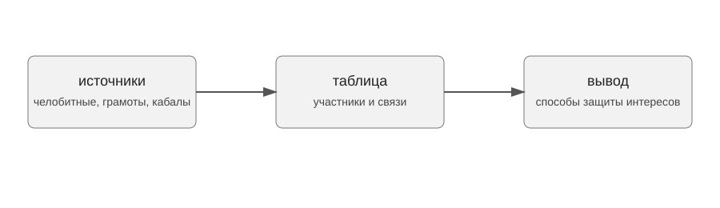

Проект по материалам челобитных жителей Устюжской четверти
Проект посвящен судебным спорам, в которых участвовала община Устюга и Устюжского уезда в первой половине XVII века. В центре внимания находятся способы защиты коллективных интересов в делах, связанных с челобитными жителей Устюжской четверти.
Цель проекта состоит в том, чтобы показать, какие документы позволяют реконструировать судебные конфликты и какие практики защиты интересов общины в них проявляются.

Основу проекта составляют актовые и делопроизводственные документы Устюжской четверти: челобитные, царские грамоты, памяти, поручные записи, заемные кабалы и отписи. Дополнительно используются сотная Устюга Великого 1630 года и крестоприводная книга Устюга Великого и Устюжского уезда 1645 года.
Челобитная была письменным прошением или жалобой, с помощью которой частные лица или община обращались к власти.
Справочно о работе с историческими источниками можно обратиться к сайту РГАДА.
| Источник | Что фиксирует | Значение для проекта |
|---|---|---|
| Челобитная | жалобу или прошение | показывает позицию стороны |
| Поручная запись | поручительство | выявляет социальные связи |
| Заемная кабала | долг и условия займа | помогает понять причины спора |
import pandas as pd
data = pd.DataFrame({
"source": ["община", "Савва Пинегин", "Савва Пинегин"],
"target": ["Савва Пинегин", "Устюжская четверть", "ответчики"],
"relation": ["представительство", "челобитная", "судебный спор"]
})
dataНиже приведена простая схема связей между участниками дела.
Челобитные и связанные с ними документы позволяют рассматривать судебный спор как систему отношений между общиной, ее представителями, ответчиками и приказной властью. Такой подход помогает описать не только ход отдельных дел, но и способы защиты интересов общины.